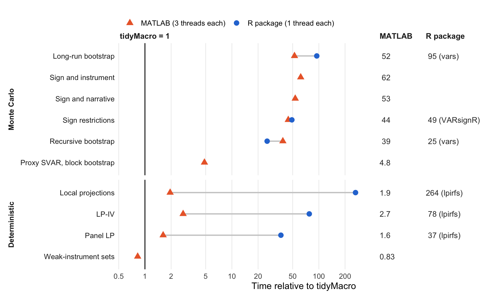

Speed
tidyMacro against the reference MATLAB codes and against other R packages, same specifications
tidyMacro is timed twice: against the MATLAB code that each method on the Validation page is compared with, and against the R packages that cover the same task. Both comparisons use the same data, lag orders, horizons and draw counts on each side.
- Timing. Wall-clock time of one complete call, including VAR estimation. Each routine is run once untimed as a warm-up. Monte Carlo routines are then timed 3 times with different seeds and deterministic routines 20 times. The reported figure is the median.
- Machine. Intel Core i5-7360U (2 cores, 4 threads), macOS 13.6, MATLAB R2025b, R 4.6.0 with the reference BLAS, tidyMacro 1.1.2.
Against the MATLAB reference codes
- Thread budget. Both sides get 3 threads. tidyMacro receives
n_threads = 3; MATLAB runs undermaxNumCompThreads(3). The reference MATLAB codes have noparforloops, so in MATLAB the budget only reaches multithreaded linear algebra. - Sign + external IV. The full Cesa-Bianchi and Sokol (2022) specification takes hours in the VAR Toolbox, so a lighter version is timed: one instrument (the monetary-policy surprise) instead of two, and the financial-shock signs imposed on impact only.
- LP-DiD is not timed, because its reference is Stata output.
| Median seconds per call | ||||||
| Same data and specification on both sides; 3 threads each | ||||||
| Method | Data | Workload | tidyMacro function | MATLAB (s) | tidyMacro (s) | Speed-up |
|---|---|---|---|---|---|---|
| Monte Carlo | ||||||
| Sign + external IV (light) | CBS2022 | 1,000 accepted draws, one IV, impact signs | fSignRestr(instrument =) | 17.8 | 0.288 | 62× |
| Sign + narrative | ADRR2018 | 1,000 accepted draws, Volcker 1979m10 | fSignRestr(narrative =) | 54.7 | 1.02 | 53× |
| Long run (Blanchard-Quah) | Gali1999 | 1,000 residual-bootstrap draws, h = 0-40 | fVAR + fBootstrapBQ | 7.97 | 0.152 | 52× |
| Sign restrictions | Uhlig2005 | 1,000 accepted draws, signs over h = 0-5 | fSignRestr | 27.1 | 0.610 | 44× |
| Short run (Cholesky) | Bloom2009 | 1,000 wild-bootstrap draws, h = 0-48 | fVAR + fBootstrapChol | 93.2 | 2.42 | 39× |
| External instrument (MBB) | Kaenzig2021 | 2,000 moving-block draws, h = 0-48 | fVAR + fBootstrapIVMBB | 11.7 | 2.43 | 4.8× |
| Deterministic | ||||||
| LP-IV | JordaTaylor2025IV | h = 0-48 | fLPIV | 0.0344 | 0.0125 | 2.7× |
| LP, exogenous shock | JordaTaylor2025 | h = 0-17 | fLP | 0.00974 | 0.00500 | 1.9× |
| Panel LP | MianSufiVerner2017 | h = 0-6, two shocks | fLPPanel | 0.0202 | 0.0125 | 1.6× |
| External instrument (MSW) | Kaenzig2021 | Weak-IV robust bands, h = 0-48 | fVAR + fMSW | 0.450 | 0.545 | 0.83× |
Against other R packages
- Packages. vars for bootstrapped recursive and long-run responses, VARsignR for sign restrictions, and lpirfs for local projections. VARsignR is archived on CRAN; version 0.1.3 is installed from the archive.
- Thread budget. These packages run on one thread, so tidyMacro gets
n_threads = 1as well. - Same estimates. Before timing, the script checks that each pair estimates the same model: the VAR coefficients of tidyMacro and vars agree, and the point responses of tidyMacro and lpirfs agree to machine precision. vars resamples residuals, so tidyMacro uses its residual bootstrap here. lpirfs projects every endogenous variable on the shock and on lags of all of them, so the tidyMacro calls use the same outcomes and regressors.
- Sign restrictions. Both sides return 1,000 accepted draws with the signs imposed over horizons 0 to 5, VARsignR with the 200 × 200 draw budget of its documentation.
uhlig.reject()can keep several accepted rotations from one posterior draw, whilefSignRestr()keeps one per posterior draw, so VARsignR needs far fewer posterior draws for the same 1,000.
| Median seconds per call | ||||||||
| Same data and specification on both sides; one thread each | ||||||||
| Method | Data | Workload | tidyMacro function | Package | Package function | Package (s) | tidyMacro (s) | Speed-up |
|---|---|---|---|---|---|---|---|---|
| Monte Carlo | ||||||||
| Long run (Blanchard-Quah) | Gali1999 | 1,000 residual-bootstrap draws, h = 0-40 | fVAR + fBootstrapBQ | vars | VAR + BQ + irf(boot = TRUE) | 9.55 | 0.101 | 95× |
| Sign restrictions | Uhlig2005 | 1,000 accepted draws, signs over h = 0-5 | fSignRestr | VARsignR | uhlig.reject | 17.1 | 0.350 | 49× |
| Short run (Cholesky) | Bloom2009 | 1,000 residual-bootstrap draws, h = 0-48 | fVAR + fBootstrapChol | vars | VAR + irf(boot = TRUE) | 152 | 6.00 | 25× |
| Deterministic | ||||||||
| LP, exogenous shock | JordaTaylor2025 | 3 outcomes, h = 0-17 | fLP | lpirfs | lp_lin_iv | 1.85 | 0.00700 | 260× |
| LP-IV | JordaTaylor2025IV | 3 outcomes, h = 0-48 | fLPIV | lpirfs | lp_lin_iv(use_twosls = TRUE) | 1.98 | 0.0255 | 78× |
| Panel LP | MianSufiVerner2017 | h = 0-6 | fLPPanel | lpirfs | lp_lin_panel | 0.183 | 0.00500 | 37× |